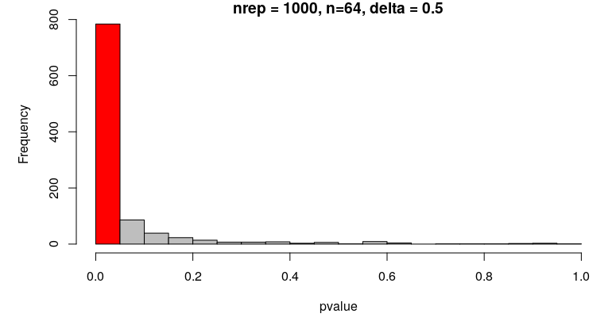

Checking power through simulations
The power of a statistical test tells us the probability that the test correctly rejects the null hypothesis. In other words, if we only examine true effects, the power is the proportion of tests that will (correctly) reject the null hypothesis. Often, the power is set to 0.8, though, as with alpha = 0.05, this is an arbitrary choice.
Generally, we want to do power analysis before collecting data, to work out the sample size we need to detect some effect. If we are calculating a required sample size, the power analysis can also be called a sample size calculation.
Taking the example of a t-test, we need to understand a few parameters:
n, the sample sizedelta, the difference in means that you want to be able to detect. Deciding what this value should be is tricky. You might rely on estimates from the literature (though bear in mind they are likely to be inflated), or you can use a ‘minimally important difference’: you specify the threshold below which you do not think a difference is interesting enough to be worth detecting. In a clinical trial, this might be the smallest difference that a patient would care about, for example.sd, the standard deviation. Usually this needs to be estimated from the literature or from pilot studies.sig.level, the alpha, as discussed previously.power, the power as defined above.
You can calculate any one of these parameters, given all of the others. We usually want to specify, delta, sd, sig.level and power and calculate the required sample size.
We can calculate the required sample size for a t.test using: power.t.test(n = NULL, delta = 0.5, sd = 1, sig.level = 0.05, power = 0.8)
Notice that n = NULL, so this parameter is calculated.
The sample size n we need given this set of parameters, is 64 per group.
Just as we can check the alpha of our test by sampling from the same distribution (i.e. simulating data without an effect), we can check the power by sampling from different distributions (i.e. simulating data with an effect).
If we sample values from two normal ditributions with different means (e.g. N(0,1) and N(0.5,1)), what is the minimum sample size we need to detect a significant difference in means with a t.test, 80% of the time?
YOUR TURN:
Use your simulation skills to work out the power through simulation. Write a function which:
Draws
nvalues from a random normal distribution withmean1, and anothernvalues from a normal distribution withmean2Compares the means of these two samples with a t-test and extracts the p.value
Replicate the function 1000 times using the parameters used in the power calculation above (that used the power.t.test function)
Calculate the proportion of p-values that are <0.05
p-values of t tests comparing means from 1000 sims N(0,1) and N(0.5, 1) with n=64

The proportion of correctly rejected null hypotheses in the simulation is close to 0.8, which is what we would expect.
Using simulations for power analysis is not really necessary for simple examples like a t-test, though it is useful to check your understanding.
When analyses become complex and it is hard or impossible to determine a sample size analytically (i.e. you can’t calculate it, or there’s no suitable function to use), then simulations are an indispensible tool.
A simple example of a power analysis like the one you’ve just done can be found in the “Power analysis” section of this paper: * Blanco, David, et al (2020). “Effect of an editorial intervention to improve the completeness of reporting of randomised trials: a randomised controlled trial.” BMJ open 10.5: e036799. https://doi.org/10.1136/bmjopen-2020-036799